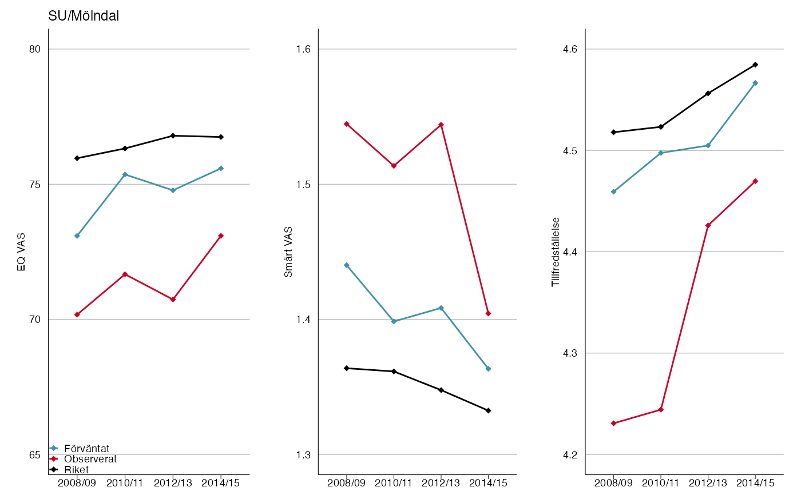

Visualizing PROM-trends for each clinic using ggplot2.
prom_trends(
eq_vas_exp,
eq_vas_obs,
eq_vas_riket,
pain_exp,
pain_obs,
pain_riket,
satis_exp,
satis_obs,
satis_riket,
riket_name = "Riket",
y_labs = c("EQ VAS", "Smärt VAS", "Tillfredställelse"),
y_breaks = c(5, 5, 5),
year = c("2008/09", "2010/11", "2012/13", "2014/15"),
subset = 1,
legend_labels = c("Förväntat", "Observerat", "Riket"),
line_colors = c("#3E92AA", "#C90327", "black"),
line_size = 0.5,
point_size = 1.5,
legend.position = c(0, 0),
n_row = 1,
n_col = 3,
...
)Data frame with expected EQ VAS data.
Data frame with observed EQ VAS data.
Data frame with Swedish average EQ VAS data.
Data frame with expected pain VAS data.
Data frame with observed pain VAS data.
Data frame with Swedish average pain VAS data.
Data frame with expected satisfaction VAS data.
Data frame with observed satisfaction VAS data.
Data frame with Swedish average satisfaction VAS data.
Character to find what row is Swedish average, usually named "Riket".
Labels for y-axis
Y breaks in the three plots.
X-axis years, character vector works. The year variables will be renamed as they appear in the data set.
Which plots should be generated, subset = 1
corresponds to the first plot in alphabetical order.
Labels for the legends in the plot.
Colors of the lines.
Line thickness of the lines in plot.
Point sizes in plot.
Position of the legend in plot, matrix where each row
corresponds to a legend position is recommended,
if length(subset) > 1.
Number of rows/columns for the three plots.
arguments passed to theme_slr()
List of several gtable objects where each gtable object is one clinic
# Create trend plot for SU/Mölndal
# Look at 9 data sets to see the required structure.
p <-
prom_trends(
rcplot::eq_vas_exp,
rcplot::eq_vas_obs,
rcplot::eq_vas_riket,
rcplot::pain_exp,
rcplot::pain_obs,
rcplot::pain_riket,
rcplot::satis_exp,
rcplot::satis_obs,
rcplot::satis_riket,
y_breaks = c(5, 0.1, 0.1),
subset = 49
)
plot(p)
